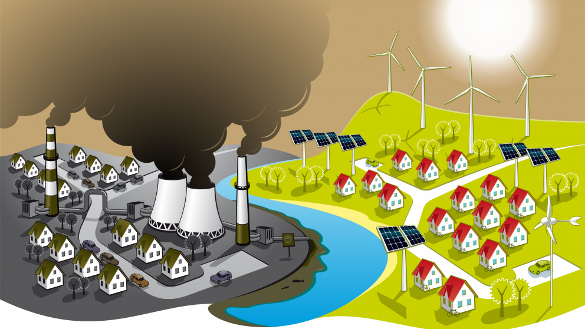
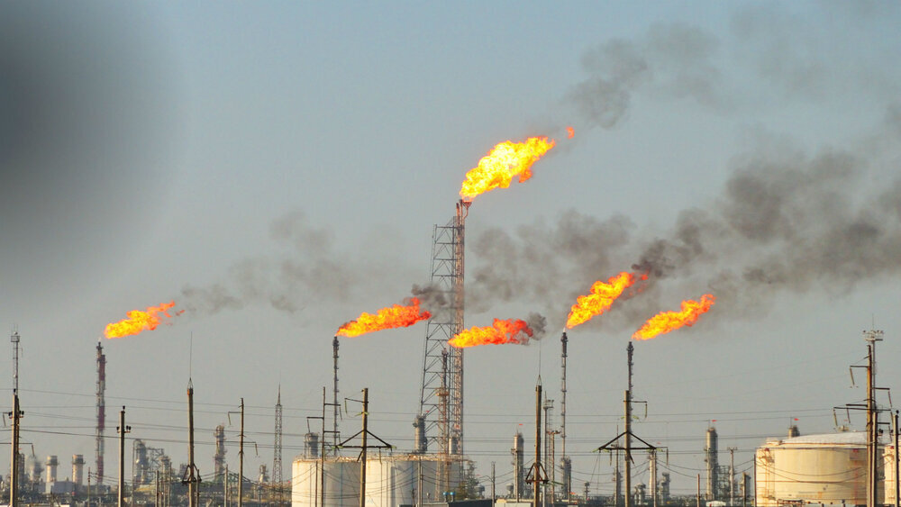
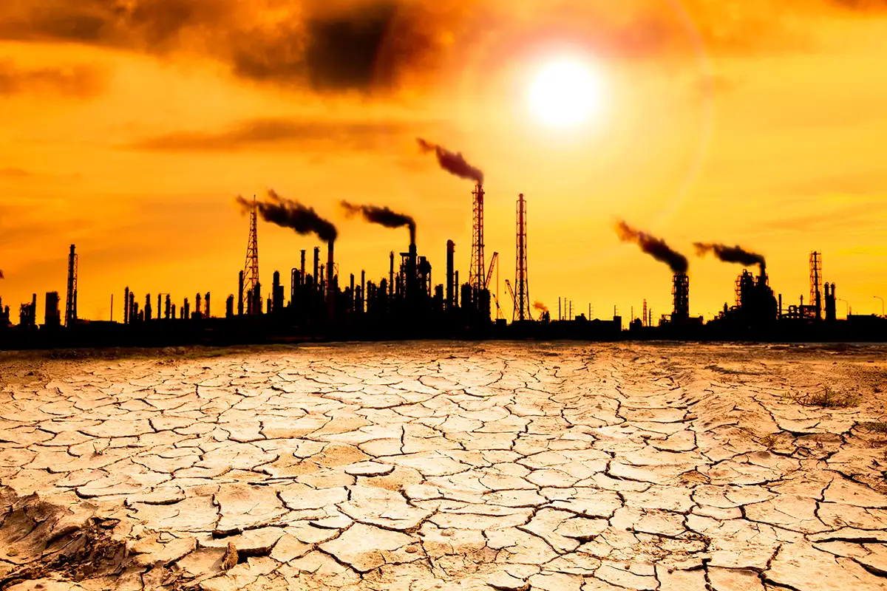
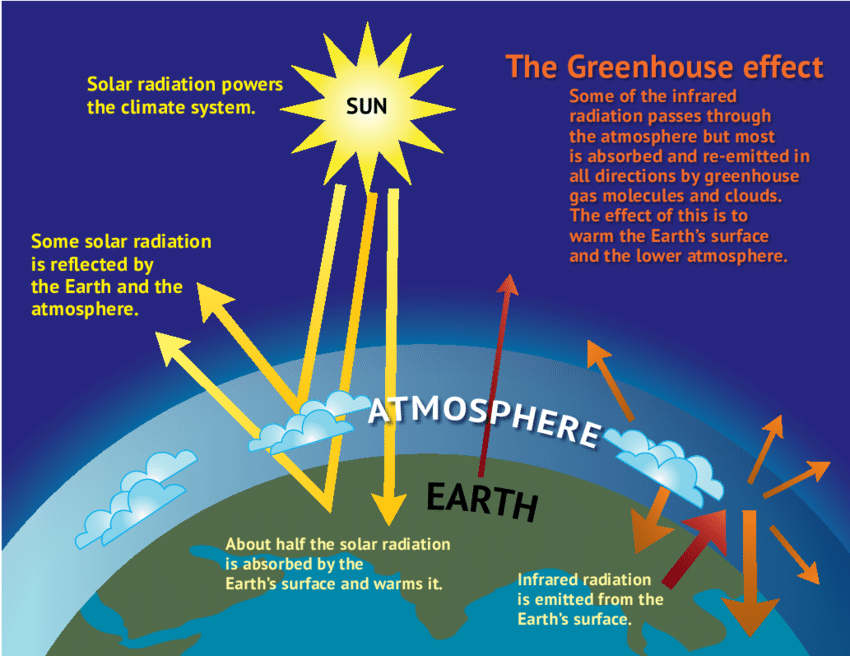

ADVERSE EFFECTS OF NOT USING SUSTAINABLE DEVELOPMENT GOAL 7
1 / 3

Air Pollution and Climate Change
2 / 3

Air Pollution
3 / 3

Climate Change
ADVERSE EFFECTS OF NOT USING SUSTAINABLE DEVELOPMENT GOAL 7
Seeks ensure access affordable, reliable, sustainable and modern energy for all. This means doubling the global rate of energy efficiency improvements, as well as substantially increasing the percentage of renewables in the energy mix. We cannot maintain our quality of life or Earth's ecosystems unless we acknowledge and reduce the damage we do to the planet each day. If we don't learn to live sustainably, some of the effects will be: More landfills popping up everywhere. More animals going extinct due to deforestation and pollution. There is no development without fuelling the engine of growth. Energy is critical and people with no sustainable access to energy are deprived of the opportunity to become part of national and global progress. And yet, one billion people around the world live without access to energy.
Therefore, if sdg 7 affordable and clean energy is not used sustainably, it will have to face the following effects.
Indoor air pollution and Urban air pollution
Climate change
Environmental degradation
Expencive storage costs
Solid waste disposal
Fuel spills or natural gas leaks
Emissions of greenhouse gases
Most non renewable energy resources produce Carbondipxide as a byproduct
Indoor air pollution and Urban air pollution:challenges and opportunity
With the continual improvement in our quality of life, indoor air quality has become an important area of concern in the twenty-first century. Indoor air quality is affected by many factors including the type and running conditions of indoor pollution sources, ventilation conditions, as well as indoor activities. Studies revealed that the outdoor environment is also an important factor that cannot be neglected for indoor air quality studies. In this review, the indoor and outdoor air pollution relationships obtained from different studies are discussed in order to identify the key factors affecting the indoor air quality. As climate change is recognized as imposing impacts on the environment, how it affects the indoor air quality and the health impacts to the occupants will be evaluated in this paper. The major challenges and opportunities in indoor/outdoor air pollution studies will be highlighted.
Introduction
With rapid development of the economy and booming population growth, an enormous amount of resources (e.g., energy, water, and food) is required in our society to sustain our activities. As a result, various kinds of pollution have been produced. Among the various pollution problems, air pollution has caused major concern over the world due to its widespread nature, damage to our environment and potential health risk to humans. Although concern has been raised regarding the emission of air pollutants from anthropogenic sources, our society still relies heavily on fossil fuels for various applications such as electricity generation, transportation, industrial and domestic heating, and so on. An obvious result of this is the deterioration of our air quality, particularly in developing countries. Air pollution has become a public concerned problem in modern metropolises. Numerous studies in physics, chemistry, geography, and other relevant areas have been conducted to investigate the cause and seriousness of the air pollution problems (Seinfeld, 1986). At the same time, the issue of indoor air pollution also piqued the interest of many scientists, as people spend most of their time (>80%) indoors (Jenkins et al., 1992). Although the time people spent indoors varies with season, age, gender, type of work, health conditions of inhabitants, and so on, good air quality can safeguard the health of the occupants and increase the productivity of workers. Apparently, indoor air quality should be better than outdoor air quality due to the shielding effect of buildings and possible installation of ventilation and air cleaning devices. However, for those combined indoor and outdoor air quality studies in literature, more than 2/3 have found indoor air pollutant concentration higher than outdoor (Chen and Zhao, 2011). This indicates the importance of conducting more studies in order to enhance our understanding on the cause of problems and associated remedial measures. Meanwhile, the number of publications related to indoor air pollution has increased tremendously in recent decades. Many studies have confirmed that indoor air quality is highly affected by outdoor air quality. Therefore, to solve our pollution problems, both indoor and outdoor environment should be considered. In this paper, various issues of indoor air quality and how it is affected by the outdoor air quality in urban environment will be discussed.
Outdoor Environment
Outdoor air pollutants mainly consist of NOx, SO2, O3, CO, HC, and particulate matters (PM) of different particle sizes. In urban areas, these pollutants are mainly emitted from on-road and off-road vehicles, but there are also contributions from power plants, industrial boilers, incinerators, petrochemical plants, aircrafts, ships and so on, depending on the locations and prevailing winds. Comparatively, the contribution from cross border sources is less significant in urban areas due to its increased distance from the pollution sources. However, urban air quality is highly affected by city design. Densely distributed and deep street canyons (buildings with large building height to road width ratios) can block and weaken the approaching wind, thus reducing its air dispersion capability (Cheng et al., 2009; Li et al., 2009, 2010). On the other hand, good urban design can disperse air pollutants and alleviate the problems of air pollutant accumulation (Li et al., 2005, 2009; Santamouris, 2013).
Indoor Air Pollutants and Sources
Indoor Air Pollutants
A number of air pollutants have been recognized to exist indoors, including NOx, SO2, O3, CO, volatile and semi-volatile organic compounds (VOCs), PM, radon, and microorganism. Some of these pollutants (e.g., NOx, SO2, O3, PM) are common to both indoor and outdoor environments, and some of them may be originated from outdoors. These air pollutants can be inorganic, organic, biological or even radioactive. The effect of these air pollutants on humans depends on their toxicity, concentration and exposure time, and may vary from person to person. The most common effect is called sick building syndrome (SBS), in which people experience uncomfortable or acute health effects such as irritation of nose, eyes and throat, skin ailments, allergies, and so on. The cause may not be identified, but the syndrome may disappear after an affected person leaves the office or building. Indoor air quality can be improved and SBS can be reduced when the ventilation rate of the room is improved (Wargocki et al., 2000). The indoor air quality also affects the performance of workers and office staff. Wyon (2004) found that the performance of real office work would be significantly and substantially affected by changes in indoor environmental quality and that the work performance could be significantly enhanced by removing common indoor sources of air pollution.
Sources of Indoor Air Pollutants
Table 1 shows the source of various indoor air pollutants, and their health impacts. According to the World Health Organization (WHO), around 3 billion people in the world still cook and heat their homes using dirty solid fuels (such as waste wood, charcoal, coal, dung, crop wastes) on open fireplaces, cooking stoves or kangs, which generates a large amount of air pollutants (such as SO2, NOx, CO, and PM). Even worse is that these air pollutants may accumulate in the indoor environment if the indoor air is not well ventilated, which seriously affects the health of the inhabitants (WHO, 2014). There are also many anthropogenic sources (such as wooden construction materials, oil based paints, fragrant decorations, and indoor plants) emitting VOCs at a variety of concentrations. These VOCs (such as formaldehyde) may be carcinogenic, while some of them (such as turpenes) may react with ozone to form secondary fine suspended indoor particles (Weschler and Shields, 1999). Wallace (1985) indicated that many indoor sources of toxic organics exist among thousands of consumer products and building materials. Radon, a colorless carcinogenic radioactive gas and the second most important cause of lung cancer in many countries (EPA, 2014a), causes problem in many houses built with stony construction materials or basements with poor ventilation. There are also biological sources including pets, dust mites and humans. The existence of these indoor air pollutants increases the risk of people with breathing problems, such as asthma sufferers, and with compromised or underdeveloped immune systems.
PM
Cooking stoves;fireplaces;smoking;outdoor air
Respiratory and cardivascular illness
SO2
Cooking stoves;fireplaces;outdoor air
Impairment of respiratory function
NO2
Cooking stoves;fireplaces;outdoor air
Irritate the lungs and lower resistance to respiratory infection
CO
Cooking stoves;fireplaces;water heater;outdoor air
highly toxic and fatal at a conc. 700ppm
Ozone
Air cleaning device with high voltage; outdoor air
Asthma and allergic triggers
VOCs (such as formaldehyde, turpenes)
Building materials including carpet, plywood (emit formaldehyde); Paint and solvents; Clothing (after dry cleaning) (emits tetrachloroethylene, or other dry ceaning fluids); air fresheners, incense, other scented items; certain plants (emit turpenes)
Some carcinogenic; can also trigger formation of photochemical oxidants, such as peraxyacyl nitrates (PAN) and aldehydes, which cause eye irritation
Radon
Exuded frorm earth and rocks such as granite and gneiss in certain locations with low ventilated air and trapped inside houses
Radioactive; leading cause of lung cancer in non-smokers
Biological air polutants Igasses and airborne particulates)
Pets (dander), human (dust from minute skin flakes and decomposed hair), dust mites lenzymes and jum-sized fecal droppings), inhabitants imethane), wall and air-duct imold)
people with breathing problems, uch as asthma sufferers, and with compromised or underdeveloped immune systems
Many studies (He et al., 2004; Liu et al., 2006; Raunemaa et al., 1989) indicate that indoor air quality is highly related to indoor activities such as smoking, cleaning or conducting combustion processes such as cooking and using a fireplace. He et al. (2004) quantified the effect of indoor sources on indoor particulate concentrations and emission rates from different types of indoor sources and activities, and found that cooking related activities could increase PM during the process and elevate the indoor particle number concentration by 1.5 to 27 times.
Effects of Outdoor Environment on Indoor Air Pollution
Interaction of Outdoor and Indoor Air
Many studies indicate that indoor air quality is affected by outdoor air (Baek et al., 1997; Jones et al., 2000; Kuo and Shen, 2010; Meadow et al., 2014; Fung et al., 2014). Kuo and Shen (2010) found a similar increase in concentration of PM2.5 and PM10 in both indoor and outdoor air during a dust storm event and interpreted the cause to be the extraction of outdoor air from their building's ventilation system. Baek et al. (1997) studied the I/O relationships in Korean urban areas and confirmed the importance of ambient air in determining the quality of indoor air. In their study, the majority of the VOCs measured in both indoor and outdoor environments were derived from outdoor sources. Recently, Fung et al. (2014) found evidence of diesel exhaust being extracted into a mechanically ventilated building from unloading trucks, which is a quite common phenomenon for those fresh air intakes designed at low level. Jones et al. (2000), in their study on the indoor and outdoor relationships of PM in domestic homes in different locations of Birmingham, UK, found, through the study of the chemical composition, that fine lead and sulfate particles exist in indoor indicating the penetration of air from outdoor sources to indoor environment.
Most of the literature studied the influence of outdoor environments on indoor air quality (Raunemaa et al., 1989; Freijer and Bloemen, 2000; Cyrys et al., 2004; Chen and Zhao, 2011). However, indoor air quality also affects outdoor environments. Lonc and Plewa compared the indoor and outdoor bioaerosols in poultry farms and found that the farm buildings are emitters of microbiological contaminants in the atmosphere that may affect human's health (Lonc and Plewa, 2010, 2011).
These results provide strong evidence of the existence of an interaction between indoor and outdoor air, but the relative contributions of each depends on the interaction pathways discussed in the following section.
Pathways of Outdoor Air Pollutants to Indoor Environment
There are three main mechanisms that allow outdoor air to enter and affect indoor environments: mechanical ventilation, natural ventilation and infiltration (Figure 1). Mechanical ventilation can be driven by a ventilation fan or air conditioner of a dwelling, or by a central air conditioning system of a building, all of which draws in outdoor air from their fresh air intakes. Natural ventilation is driven by prevailing wind flow and occurs whenever the doors and windows of the room/building are open. Even without these ventilations, air exchange between indoor and outdoor environments can still occur through cracks and leaks in the building envelope, a process called infiltration, which may be significant for a building with poor sealing. Due to these three mechanisms, the air pollutants from outdoor can penetrate into the indoor environment, and can either be diluted or accumulated according to the ventilation condition. Johnson et al. (2004) studied the key factors affecting air exchange rate (AER) and the relationship between indoor and outdoor concentrations of traffic-related air pollutants. They found that AER was affected by both temperature and wind speed, and tended to increase with increasing the number of opened windows and doors connected to exterior. Furthermore, both the outdoor and indoor pollutant concentrations were suggested to be the variable of choice for predicting indoor pollutant concentration.
This indicates that indoor pollution sources, ventilation conditions, and even the outdoor environment can affect indoor air pollution. In recent years, there have been an increasing number of studies on the relationship between indoor and outdoor air pollutant concentrations under different conditions. These studies and their main findings will be discussed in the subsequent sections.
Climate change
Causes and consequences of climate change
The “greenhouse effect”
Scientists have been aware since the late 1960’s of high concentrations of carbon dioxide(CO2) and other greenhouse gases (GHG) such as methane (CH 4) and nitrous oxides (N2O) in
the atmosphere. It is in recent decades, though, that the link between greenhouse gases andclimate warming has caught the attention of scientists and politicians, as well as the genera
public, via the well-known “greenhouse effect”. Graph 1 illustrates the basic processes behindthe greenhouse effect. As the sun’s energy hits the Earth, some of that energy is absorbed by
the earth’s crust and by the oceans, warming the planet. The rest of the energy is radiatedback toward space as infrared energy. While some of this infrared energy does radiate back
into space, some portion is absorbed and re-emitted by water vapor and other greenhouse gases in the atmosphere. This absorbed energy helps to warm the planet’s surface and
atmosphere just like a greenhouse.

Source: IPCC WG1 AR4 SPM
Projections of future ‘climate conflicts’ and the SDGs
There exists an extremely small number of studies making projections on future climateconflicts. On the one hand, Burke et al (2009) predict that if future conflicts in sub-Saharan
Africa are on average as deadly as present conflicts, and assuming linear increases intemperature to 2030, this warming will increase armed conflict incidence by roughly 54%, or
an additional 393,000 battle deaths by 2030. On the other hand, based on a statistical modelof the historical effect of key socioeconomic variables on country-specific conflict incidence
for the period 1960–2013, Hegre et al (2015) forecast the annual incidence of conflict for the 2014–2100 period along the five shared socioeconomic pathways (SSPs). They show that
broader socioeconomic development, expressed by higher growth in education and povertyalleviation, could help in offsetting most of the conflict risk in developing countries associated
with reduced economic growth due to implementation of policies to curb GHG emissions.However, predictions based on historical models provide a weak foundation for projecting
future conflict risk under future climate scenarios since we do not know how conflict patternswill evolve over time under anthropogenic climate change. Research needs to simulate future
conflict risk along alternative configurations of representative concentration pathways andshared socioeconomic pathways, while at the same time accounting for feedbacks from
conflict onto economic activity.Although climatic conditions seem to affect the characteristics of conflict, in particular
duration and intensity, rather than its onset, they can still endanger the successfulimplementation not only of SDG 13 but almost all SDGs. Conflict is development in reverse:
conflict does not only undermine the capacity of governments (and non-governmental actors)to reduce greenhouse emissions and to provide adequate protection from natural disasters,
but it is also a major driver of climatic/environmental vulnerability via its negative effects oneconomic growth, education, food security, and environmental destruction. Hence, ending
violent conflict may be one of the most efficient and cost-effective ways to improve socialresilience to natural disasters and climate change in general.